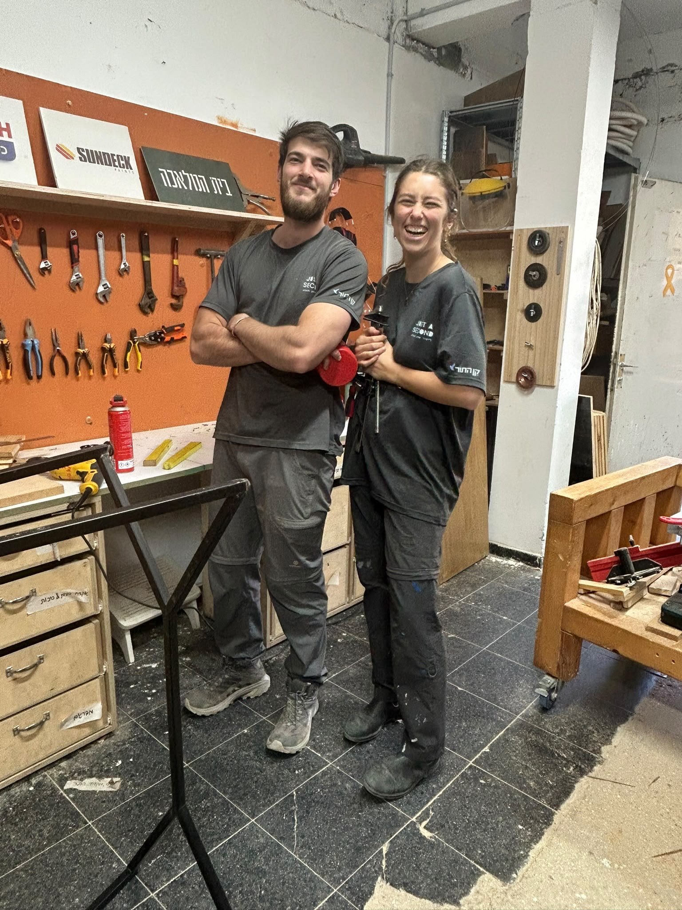
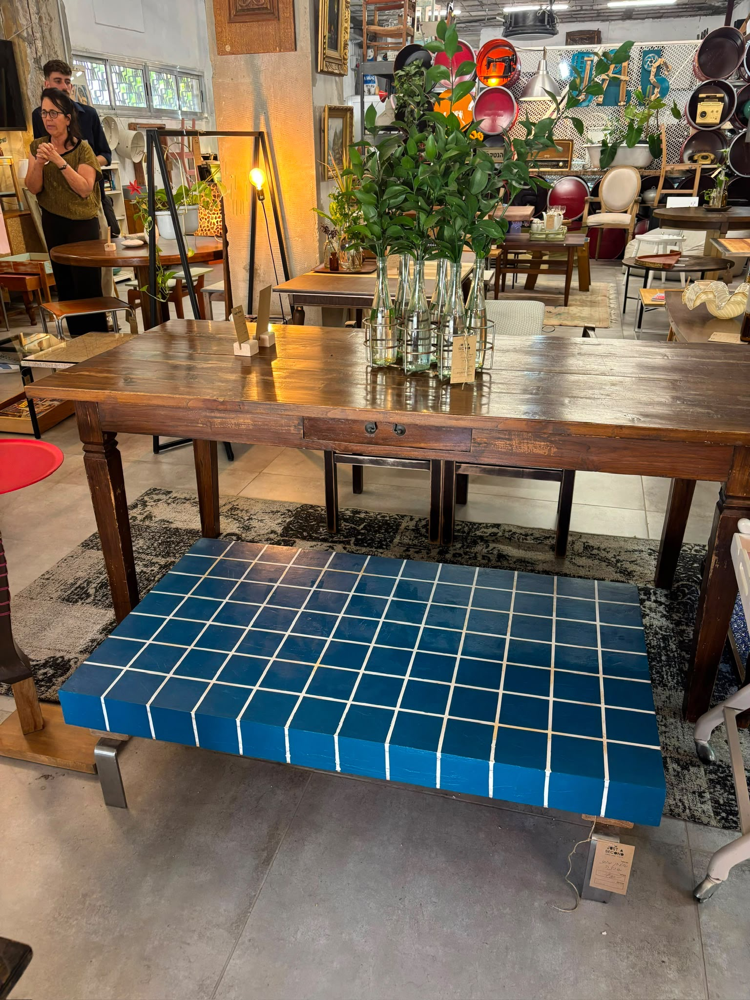
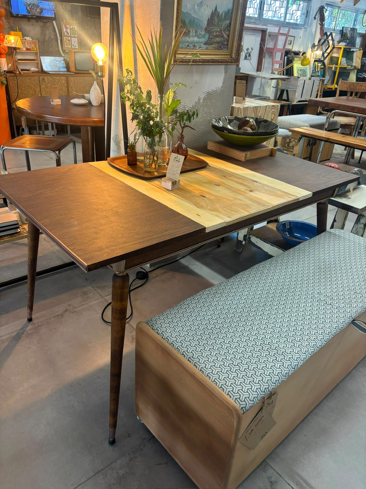

Employment, creativity,
and a place to return to
For nearly three years, reserve duty has shaped daily life for young Israelis — studies interrupted, jobs hard to hold on to, and every plan made with an asterisk, because the next call-up could come at any moment.

At Just a Second, we have made employing reservists a core part of what we do.
Just a Second is an environmental and social enterprise that rescues furniture and materials from apartments about to be demolished, giving them new life instead of letting them go to waste. Reservists between rounds of service do the deconstruction and upcycling work — flexible, hands-on and meaningful. We call it healing by doing.
Every item we restore is sold in our gallery-shop, with profits going toward mental-health support for combat soldiers and veterans.
More and more reservists want to join us. Our only constraint is funding. That is why we created "Adopt a Reservist" — you can fund one workday, or several.


Rescued, restored, resold. Every piece funds the next workday.